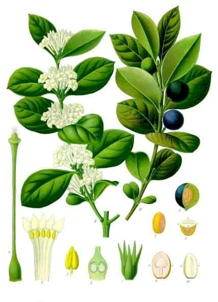

The Empty Quarter of southern Arabia is one of the largest sand deserts on Earth. About 125,000 years ago, during a warm and wet spell often called Green Arabia, part of it held a freshwater lake fringed by grassland. A study published in Science describes a campsite on that lake's shore, and some of its stone points may carry the residue of an arrow poison.
The site, 'Uruq Aljelibah, lies on the edge of the ancient Mundafan lake. Terrain models built from satellite data suggest the lake covered about 340 square kilometres and was up to 29 metres deep. The team of 26 researchers was co-led by Chris Clarkson of Griffith University in Australia and Frans van Buchem of King Abdullah University of Science and Technology (KAUST), working with Saudi Arabia's Heritage Commission and King Saud University.
A lakeside toolkit
From the main excavation the team recovered 5,511 stone tools longer than 2 centimetres, almost all of them flint and made with the Levallois method, in which a stone core is carefully shaped before a flake is struck off. Pieces that fit back together show the tools were made on the spot. Across more than 130 locations the researchers also logged over 500 plant and animal fossils. Remains of hippos, an extinct long-horned buffalo, camels, Arabian oryx, gazelles and ostriches point to animal carcasses being processed at the lake.
Residues turned up on 84% of the stone points examined, and 49% showed signs of having been fixed to a handle or shaft. Some points also carry impact damage of the kind made when a weapon strikes. Chemical traces on several of them match Acokanthera schimperi, a plant known as the arrow poison tree. Other residues came from palms, tubers, shrubs and tree resins, showing that plants were processed too.
"Archaeological sites this old rarely preserve such a complete snapshot of daily life." (Chris Clarkson, Griffith University, via IFLScience)

How sure is the poison?
The researchers present the poison interpretation as tentative. According to IFLScience, there is no direct evidence that a poisoned weapon brought down any animal, and the team cannot say whether the points tipped thrusting spears or thrown projectiles. The findings also come from a single site.
The paper describes the toolmakers simply as hominins, the group that includes our own species and its close relatives, and places the site within the wider question of how and when Homo sapiens spread out of Africa into Asia. If the poison reading holds up, it would show that people living by Arabia's lost lakes knew their local plants well enough to turn one of them into a weapon.